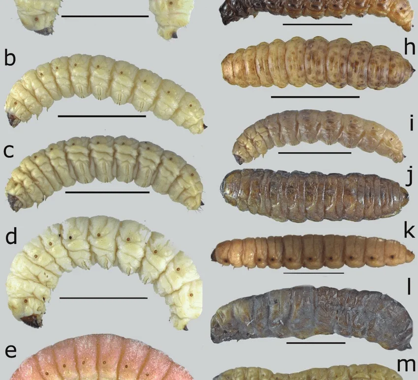

Nombre científico: Comadia redtenbacheri Color: rojo intenso, a diferencia del gusano blanco de maguey Hábitat: viven dentro de las pencas y raíces del maguey (agave) Regiones principales: Hidalgo, Tlaxcala, Puebla, Oaxaca y Estado de México Temporada de recolección: julio y agosto, cuando alcanzan su tamaño óptimo antes de convertirse en mariposas
Se fríen o tuestan, comúnmente con mantequilla, ajo y chile de árbol Ingrediente clásico para rellenar tacos Base de la tradicional sal de gusano (chile + sal), usada para acompañar mezcal Sabor terroso, ligeramente picante; textura crujiente al freírse


Página principal